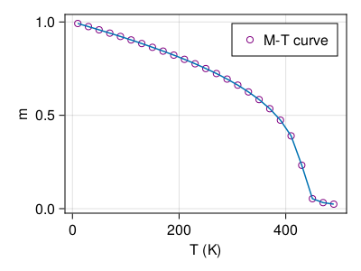

M-T curve using Monte Carlo


In JuMag, we can use Monte Carlo to compute the M-T curve. For the atomistic model with $z$ nearest neighbors, the relation between exchange constant and $T_c$ reads [1]
\[J = \frac{3 k_B T_c}{ \epsilon z }\]
where $\epsilon$ is a correction factor. For 3D classical Heisenberg model $\epsilon \approx 0.719$. In this example, we will assume $J=300k_B$ which gives $T_c = 431 K$. The full script is shown below.
using JuMag
JuMag.cuda_using_double(true)
function relax_system_single(T)
mesh = CubicMeshGPU(nx=30, ny=30, nz=30, pbc="xyz")
sim = MonteCarlo(mesh, name="mc")
init_m0(sim, (0,0,1))
add_exch(sim, J=300*k_B)
add_dmi(sim, D=0, D1=0)
add_zeeman(sim, Hx=0, Hy=0, Hz=0)
add_anis(sim, Ku=0, Kc=0)
sim.T = 100000
run_sim(sim, maxsteps=50000, save_vtk_every=-1, save_m_every=-1)
sim.T = T
run_sim(sim, maxsteps=200000, save_vtk_every=-1, save_m_every=-1)
ms = zeros(1000)
sim.T = T
for i = 1:1000
run_sim(sim, maxsteps=100, save_vtk_every=-1, save_m_every=-1)
t = JuMag.average_m(sim)
ms[i] = sqrt(t[1]^2+t[2]^2+t[3]^2)
end
return sum(ms)/length(ms)
end
function relax_system()
f = open("assets/M_H.txt", "w")
write(f, "#T(K) m \n")
for T = 10:20:500
println("Running for $T ...")
m = relax_system_single(T)
write(f, "$T $m \n")
end
close(f)
endrelax_system (generic function with 1 method)Run the relax_system function.
if filesize("assets/M_H.txt") == 0
relax_system()
end
using DelimitedFiles
using CairoMakie
function plot_m_H()
fig = Figure(resolution = (400, 300))
ax = Axis(fig[1, 1],
xlabel = "T (K)",
ylabel = "m"
)
data = readdlm("assets/M_H.txt", skipstart=1)
sc1 = scatter!(ax, data[:, 1], data[:, 2], markersize = 10, label="M-T curve")
sc1.color = :transparent
sc1.strokewidth = 1
sc1.strokecolor = :purple
lines!(ax, data[:, 1], data[:, 2])
axislegend()
#save("M_T.png", fig)
return fig
end
plot_m_H()
[1] Atomistic spin model simulations of magnetic nanomaterials, J. Phys.: Condens. Matter 26 (2014) 103202.
This page was generated using DemoCards.jl and Literate.jl.